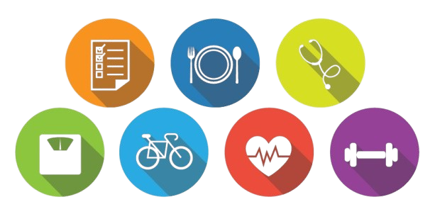

A importância da saúde para a qualidade de vida
Manter a saúde em dia é essencial para viver com mais disposição,
bem-estar e felicidade. A qualidade de vida está diretamente ligada a escolhas diárias que
favorecem o equilíbrio físico e mental.
Cuidar do corpo e da mente é um investimento no presente e no futuro,
garantindo mais energia, vitalidade e satisfação em todos os aspectos da vida.
Nutrição
Uma alimentação equilibrada é a base para o bom funcionamento do organismo.
Ela oferece os nutrientes necessários para o fortalecimento do sistema imunológico,
a prevenção de doenças e a manutenção da saúde em geral. Comer de forma saudável,
com uma variedade de alimentos naturais, é uma forma de cuidar de si mesmo. Além disso,
a nutrição influencia diretamente o nível de energia, concentração e até o humor,
refletindo diretamente na qualidade de vida.
Exercícios Físicos
A prática regular de atividades físicas é fundamental para manter o corpo saudável e a mente
equilibrada.
Exercícios físicos não só melhoram a circulação sanguínea,
fortalecem músculos e ossos,
como também têm efeitos positivos na saúde mental,
estimulando a liberação de hormônios que promovem o prazer e a motivação.
A atividade física regular contribui para o controle do peso, a melhora do sono,
a redução do estresse e o aumento da disposição,
tornando-se essencial para um estilo de vida saudável.
Saúde Mental
A saúde mental é tão importante quanto a saúde física e deve ser tratada com a mesma prioridade.
Manter o equilíbrio emocional envolve práticas como descanso adequado,
o cultivo de relações saudáveis, a busca de apoio quando necessário e a gestão de
emoções.
Prestar atenção à saúde mental ajuda a prevenir totranstornos psicológicos,
melhora a autoestima e a resiliência diante dos desafios da vida.
Manter a mente saudável é essencial para o bem-estar geral e contribui para uma vida mais leve e
equilibrada.
Ao unir boa alimentação, atividades físicas e atenção à saúde mental, construímos uma rotina mais leve e
saudável, com impactos positivos em todas as áreas da vida.
Veja o vídeo a seguir: